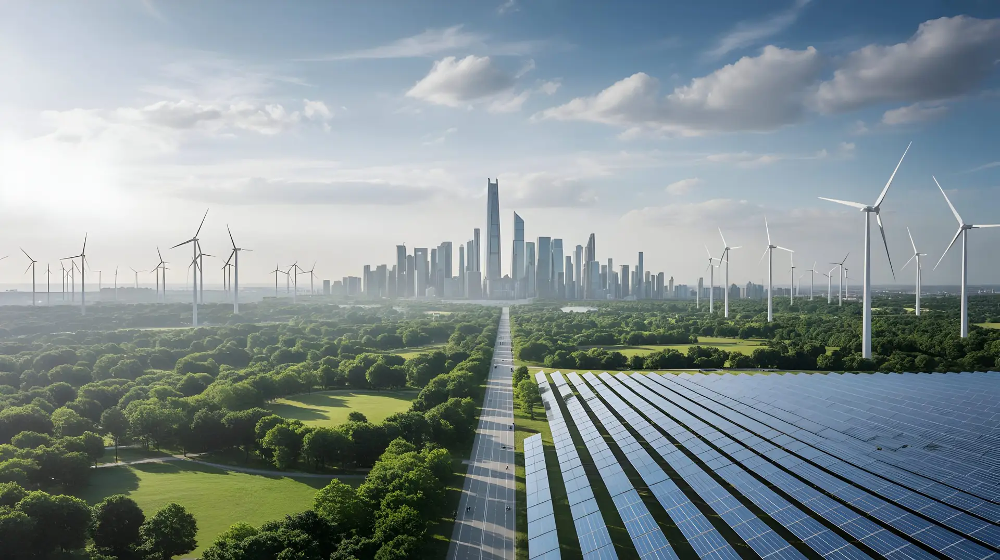

Global Status Report for
Buildings and Construction.
Prepared in partnership with the United Nations Environment Programme (UNEP) and the Global Alliance for Buildings and Construction (GlobalABC). Tracking global decarbonization progress, energy intensity baselines, and capital deployment across 190+ countries.
Countries tracked across national energy and stock models.
Standard of record for gross floor area and growth nowcasts.
Global energy demand attributable to the built environment.
Static publication data now accessible programmatically via Core.
From biennial publication to continuous enterprise nowcasting.
While the Global Status Report continues to serve as the benchmark publication for international policy negotiators and multilateral bodies, Building Insights Together has automated its core econometric and spatial models.
Through Core, financial institutions and real estate funds can now directly query the underlying physical asset parameters, country-specific retrofit curves, and emission factors that power the global report.
Request Data Integration